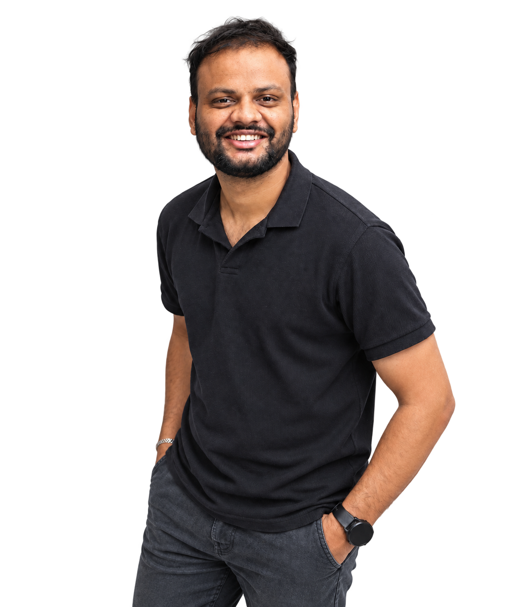

(1)Vivencia Edu Services
January 2026 – Present | Sr. Video Editor & Motion Designer
Leading visual style and post-production for educational and promotional media, with motion graphics that bring clarity to complex concepts.
a showcase of Sharath Chandra’s selected works

Video Editor & Motion Designer
based in Hyderabad, India.
With five years of experience in post-production, I turn ideas and footage into visual stories through editing, motion graphics, sound, and color.
From social content and product videos to long-form storytelling and wedding films, I bring a thoughtful eye to every frame.
View my résumé ↗Leading visual style and post-production for educational and promotional media, with motion graphics that bring clarity to complex concepts.
Overseeing the creative workflow from concept to delivery, combining video editing, motion design, and production leadership.
Working in post-production for wedding films and cinematic storytelling.
Creating motion graphics and video edits for digital marketing campaigns in a remote creative team.
Motion visuals for social media and product stories. Combining typography, shapes, and animation to give every idea its own rhythm.
Fast-moving stories for the everyday scroll. Brand, food, education, and creator edits with purposeful pacing and a clear visual voice.
Building a story beyond the first hook. Longer edits for technology, education, and product storytelling, with room for ideas to unfold.
The people, the moments, and everything in between. Wedding stories shaped through emotional pacing, sound, and cinematic color.
Explore the complete collection.
18 projects · 40 films
The complete work archive.
Scan with your phone, or click the code.
Have a story in mind?
Let’s bring it to life.